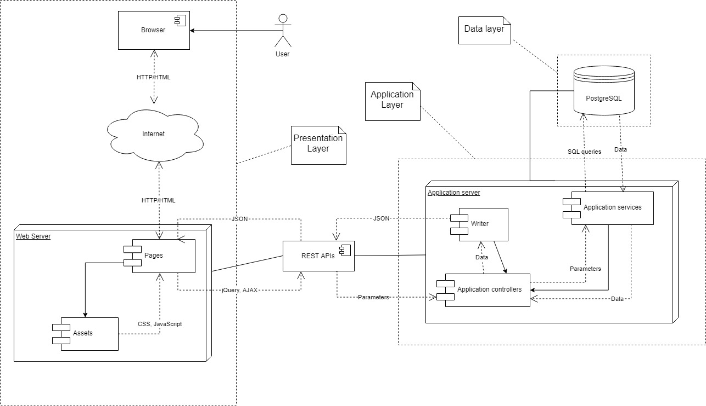
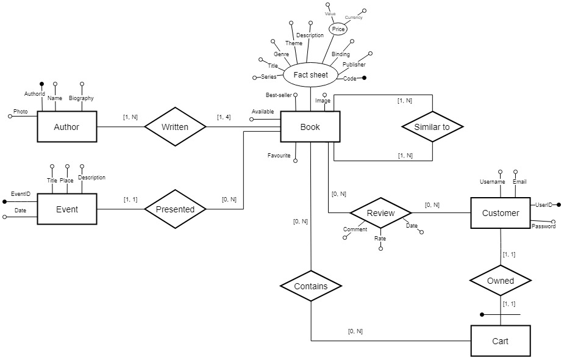

Deliverable D1
| Member n. | Role | First name | Last Name | Matricola | Email address |
|---|---|---|---|---|---|
| 1 | administrator | Matteo | Pozzi | 867005 | matteo13.pozzi@mail.polimi.it |
| 2 | member | Francesco | Vaghi | 870168 | francesco1.vaghi@mail.polimi.it |
| 3 | member | Cristina | Sambinelli | 896447 | cristina.sambinelli@mail.polimi.it |
Deliverable D0: the web application is accessible at this address.
Deliverable D2: the YAML or JSON file containing the specification of the app API can be found at this address.
Deliverable D3: the SwaggerUI page of the same API is available at this address.
Deliverable D4: the source code of D0 is available as a zip file at this address.
Deliverable D5: the address of the online source control repository is available this address. We hereby declare that this is a private repository and, upon request, we will give access to the instructors.
The web architecture is described by the following diagram:

HTML is not rendered server side because data coming from the client are rendered before being sent, so the parameters received by the server are always just strings, while data sent from server to the client are always in JSON format.
Each Resource described in the OpenAPI specs and operations about them are accessible over relative URIs which are specific for each Resource (that is, it is not possible to fetch different Resources on the same URI); of course a Resource may contain another Resource (for example Books contains information about their Authors) but specific information are obtained from a different URI.
Following the REST principle, Client and Server applications were developed independently, so that each of them could evolve without any dependency to the other one.
The interaction is also stateless, which means every request is independent from other requests and the server doesn't store anything about received requests. For requests where a session state is required, clients include in the request a cookie provided by the server when a login operation is performed.
The Resource models described in the OpenApi specs include the most relevant entities for the application functions as Books, Events, Authors, Customers of the application and their Cart where books are inserted.
Book is the main resource of the application, and contains all the relevant infos about the book itself, as his Theme and Genre modeled as enumerations to avoid the possibility to assign to books non-existing ones, and about its Author, which include his name, biography and id. Each Book can be similar to other Books.
Event is a resource which includes the information about where the event will take place and the Book presented for the occasion.
User is the resource which describes a customer of the service offered by the website, and contains all the attributes to identify and recognize each user, as email, username and password, and each User owns a Cart, uniquely identified by its owner, which contains the Books ordered by a User.
A Book can can be reviewed by a User, and the review is contained in the Review resource, which contains the Book and User identifiers and other information as the date when the review was written and the rate given to the book.
Amount and Currency resources are just for utility and are not strictly relevant for the application functionality.
The data model used by the data layer of the web application follows this ER diagram:

Each entity of the ER diagram is mapped to a corresponding Resource with the same name, while some relations are not mapped to a specific Resource because not necessary and could be easily included in one of the entities.
For example the "Contains" relation can be easily replaced by an attribute (that is Book identifier) in Cart Resource, and "Presented" and "Owned" relations can be collapsed inside an entity because of their "1-to-1" or "1-to-N" cardinality
The backend of the application was entirely developed with the JavaScript language and Node.js framework with the support of the Swagger tools and interface.
The first server stub was generated with the automatic Swagger generator provided in Swagger Editor, while all the logic's implementation was performed with IntelliJ (an IDE), to get a precious help for debugging and finding errors more efficiently.
Adherence to OpenAPI specification:
We made sure the web application adheres to the OpenAPI specification with the help of the automatically provided swagger-ui page and a lot of testing to make sure that all the endpoints answered with the right and desired data.
Partition of the web application
Static assets and application data are separated, independent and separately developed so that they would be able to evolve without influencing each other, which is surely a good practice
Session state and management:
Session state is managed with cookies to provide access to private pages and operations of specific users, as the cart's content and the possibility to finalize orders. Cookie is set by the server when a POST request to /user/login endpoint is received, and the corresponding id memorized in the database (an integer) of the user who sent the request is saved in the cookie and used as parameter when request about cart are received, to provide the right cart owned by the user. To end the session user must send a POST request to /user/logout endpoint. Obviously, a client can perform only one session per time, that is if a POST request to /user/login is sent when session is already up, the request will fail. Similarly, if a POST request to /user/logout is sent with no session currently running, the request will fail too.
Data model technology:
Data are stored in a Postgres database, which is a relational database.
Development tasks were divided in this portion:
All the members of the team worked on the specification of the OpenAPI giving support and ideas for the implementation
The most relevant APIs analyzed to provide the OpenAPI specs of this site are the example ones provided by Swagger Editor (Simple Petstore) to learn the basic organization and grouping into tags of endpoints, and more complex APIs such as this one, to see how an existing and working API is and should be organized and provided.